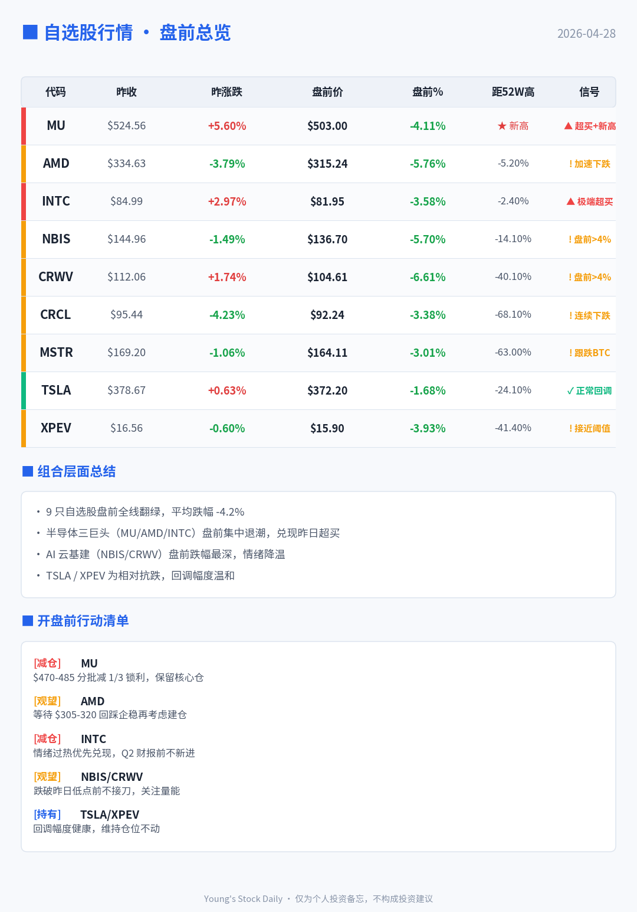

2026-04-28 · 投研日报

📈 自选股实时行情分析
🔴 异常信号总览（盘中实时）
| 代码 | 昨收 | 现价 | 今日涨跌 | 量比 | RSI6 | 距 52W 高 | 综合异常 |
|---|---|---|---|---|---|---|---|
| MU | $524.56 | $494.26 | ▼ -5.78% | 1.76 | 78.15 | -6.99% | ⚠️ 领跌半导体，盘中跌破 MA5 |
| AMD | $334.63 | $319.85 | ▼ -4.42% | 1.36 | 68.09 | -9.40% | ⚠️ 跌破 320，触发 -4% 异常 |
| INTC | $84.99 | $81.81 | ▼ -3.74% | 1.18 | 86.26 | -6.08% | 🔥 RSI6=86 极度超买，回调开始 |
| NBIS | $144.96 | $134.37 | ▼ -7.31% | 1.81 | 28.27 | -20.36% | 🔥 AI 云领跌，9 只中跌幅最深 |
| CRWV | $112.06 | $105.54 | ▼ -5.82% | 1.79 | 39.16 | -43.56% | ⚠️ GPU 云续跌，MA20 失守 |
| CRCL | $95.44 | $94.05 | ▼ -1.46% | 0.89 | 37.11 | -68.55% | ✅ 抗跌，缩量盘整 |
| MSTR | $169.20 | $163.03 | ▼ -3.65% | 0.84 | 54.73 | -64.34% | ✅ 跟随 BTC 回落，缩量 |
| TSLA | $378.67 | $374.48 | ▼ -1.11% | 1.14 | 45.04 | -24.93% | ✅ 抗跌，9 只中最强 |
| XPEV | $16.56 | $15.95 | ▼ -3.68% | 1.59 | 31.22 | -43.52% | ⚠️ 跌破 MA20，逼近支撑 $15.7 |
📉 组合层面总结
- ▼ 全线翻绿，组合等权均跌约 -4.1% — 宏观避险情绪 + BTC 跌破 $77k 双重压制
- 🔥 最强警示：INTC RSI6 = 86.26 — 极度超买，须兑现部分盈利
- 半导体主战场：MU / AMD / INTC 集体回调 — MU 距 52W 高仅 -6.99%，仍是强势品种
- AI 云次战场：NBIS -7.31% / CRWV -5.82% — 高 β 属性放大，MA20 相继失守
- Crypto 板块：MSTR 跟 BTC 下探 -3.65%，CRCL 抗跌 -1.46% — 波动<半导体
- 出行链：TSLA 最抗跌 -1.11%，XPEV 跌破 MA20 — 分化明显
🎯 行动清单（盘中 23:55）
| 优先级 | 标的 | 动作 | 触发条件 / 价位 |
|---|---|---|---|
| P0 🔥 | INTC | 减仓 1/3 | RSI6=86 极端超买，兑现部分盈利后等回踩 $75-78 |
| P0 | MU | 观望承接 | $470-485 分批建仓；若破 $470 暂缓 |
| P1 | AMD | 观望 | 等 $305-320 回踩站稳后建仓 |
| P1 | NBIS / CRWV | 避开 | MA20 已破，等企稳信号；不抄底 |
| P2 | XPEV | 警惕破位 | 若失守 $15.7 考虑止损；反之等新能源情绪修复 |
| P3 | TSLA / MSTR / CRCL | 持有 | 不追加不减仓，跟随大盘波动 |
🧩 逐股详解
MU · $494.26（-5.78%）
今日放量下跌（量比 1.76），RSI6=78.15 仍偏高，但 MA5（$482）对下方是第一道支撑。新闻面：富途资讯发出「评级最高看至 $1,000」的研报摘要，但股价并未跟随，说明短期估值矛盾已积累。距 52W 高仅 -6.99%，仍是组合中最强势品种。计划：$470-485 分批承接，这一区间对应 MA10（$469）+ MA5 下方，是技术面关键承接带。
AMD · $319.85（-4.42%）
触发 -4% 异常阈值，跌破心理关口 $320。RSI6=68.09 仍处强势区，MA5（$312）是短线防线。AMD 近 60 日涨幅 +35%，属高位消化。计划：等 $305-320 回踩站稳再建仓，若失守 MA10（$290）则完全放弃本轮。
INTC · $81.81（-3.74%）【最强警示】
RSI6 高达 86.26，KDJ_J=79.78，BIAS_24=+39.52 — 三项指标同时指向极度超买。虽然今日跌幅不算大（-3.74%），但盘中有新闻「英特尔盘中异动 早盘股价大跌 3.44%」。近 60 日涨幅 +76%、年初至今 +121%，估值已严重透支（PE_LYR 已为负）。建议减仓 1/3 兑现盈利，观察 $75-78 是否能企稳。
NBIS · $134.37（-7.31%）【全组最深跌幅】
放量破位（量比 1.81），跌破 MA5/MA10/MA20。RSI6=28.27 已进入低位但未到超卖（<15），DIF-DEA 死叉在即（MACD=-3.42）。AI 云板块高 β 属性完全暴露。避开，不抄底；等 MA20（$138）收复或 RSI6<15 再看。
CRWV · $105.54（-5.82%）
放量跳水（新闻「早盘急速跳水 6.53%」得到验证），量比 1.79。距 52W 高 -43.56%，已是深度回调品种，短期难看到反弹催化。避开，同 NBIS 一起等。
CRCL · $94.05（-1.46%）【抗跌】
缩量（量比 0.89）小跌，RSI6=37.11 进入弱平衡。稳定币叙事 + Crypto 关联度较弱是抗跌主因。持有，无操作。
MSTR · $163.03（-3.65%）
跟随 BTC（-1.98% 至 $76,211）同步回落，缩量下跌（量比 0.84）。RSI6=54.73 中性，技术面健康。持有，跟 BTC 一起看。
TSLA · $374.48（-1.11%）【最抗跌】
9 只中最抗跌，近 250 日跑输大盘（-16.73% YTD），反而成为今日避险品种。MA5（$379.67）小破，但 MA20（$369）稳健。持有。
XPEV · $15.95（-3.68%）
放量下跌（量比 1.59），跌破 MA5/MA10/MA20 三线。RSI6=31.22 接近低位。MA20（$17.30）压力明显，支撑看 $15.38（52W 低点附近 $15.7）。警惕破位，若失守 $15.7 止损。
📊 关键新闻
- MU：盘中异动 股价大跌 3.90%（市场透视 21:32）；富途资讯 评级最高看至 $1,000（21:00）
- INTC：「算力大变局」（与非网 23:19）；盘中异动 早盘大跌 3.44%（21:31）
- CRWV：盘中异动 早盘急速跳水 6.53%（21:33）
- NBIS：4 月 27 日成交额 20.24 亿美元（11:14）
🪙 关联：Web3 市场
BTC $76,211（-1.98%）、ETH $2,275（-1.80%）、恐贪指数 40（恐慌）。Web3 日报主线：宏观地缘扰动 BTC + DeFi 联合自救（3 亿美元覆盖 KelpDAO 坏账）+ 监管合规转暖。与美股共振回落。→ 查看完整 Web3 日报
⚠️ 本报告为个人投研分析，仅供参考，不构成投资建议。投资有风险，决策需谨慎。
🪙 Web3 加密日报
📅 Web3 日报 | 2026-04-28
📊 市场概览
大盘行情:
- BTC: $76,211 (-1.98%)
- ETH: $2,275 (-1.80%)
市场情绪:
- 恐惧&贪婪指数: 40 / 100 (恐慌)
💡 市场解读: 市场情绪恐慌 (指数 40)，BTC 续跌 -2.0%，市场缺乏承接，观望为主等待企稳信号。
📰 宏观市场分析
数据来源：12条新闻，时间窗口：过去24小时
🔥 主线1：DeFi联合自救加速
影响等级: High | 涉及领域: DeFi / 风险处置
核心事件:
Aave 牵头的 DeFi United 已筹集约3亿美元，用于覆盖 KelpDAO 漏洞坏账，多链生态与头部机构集体背书，显示 DeFi 在系统性风险下形成“准最后贷款人”机制，稳定市场信心。
影响分析:
- 短期: 缓解连环清算，稳定主流借贷协议
- 中期: 提升DeFi治理与风险共担范式
相关来源: Decrypt、The Defiant、Unchained
🔥 主线2：宏观地缘扰动BTC
影响等级: High | 涉及领域: 比特币 / 宏观
核心事件:
中东局势反复与美联储前景不明引发油价波动，BTC一度冲高至近8万美元后回落，24小时内触发约2.88亿美元多头清算，显示风险资产对地缘与政策高度敏感。
影响分析:
- 短期: 波动率抬升，杠杆快速出清
- 中期: 继续跟随宏观风险溢价定价
相关来源: The Defiant、Unchained
🔥 主线3：监管与合规转暖
影响等级: Medium | 涉及领域: 监管 / 基础设施
核心事件:
美国司法部表态“代码非犯罪”，CFTC 主席公开肯定预测市场价值，同时参议院推进加密法案伦理条款，释放对开发者与新型金融应用更友好的合规信号。
影响分析:
- 短期: 开发者与应用情绪修复
- 中期: 合规创新空间逐步打开
相关来源: Cointelegraph、The Defiant
💰 资金流向追踪
主要流入
| 方向 | 金额 | 解读 |
|---|---|---|
| Aave DAO → DeFi United | 约3亿美元 | 系统性救助稳定信心 |
| Mantle & Aave → KelpDAO | 5.5万ETH | 头部协议兜底坏账 |
| 蓝筹NFT | 暂无明确数据 | 资金回流高确定性资产 |
主要流出
| 方向 | 金额 | 解读 |
|---|---|---|
| BTC多头杠杆 | 2.88亿美元 | 地缘风险触发清算 |
| 高风险DeFi | 暂无明确数据 | 资金转向安全资产 |
| 散户投机仓位 | 暂无明确数据 | 风险偏好阶段性下降 |
📡 全球 KOL 舆情
数据来源：180条推文（中文81条 | 英文99条），58位KOL
综合情绪指数: 4.1 / 10（偏悲观）
| 维度 | 中文圈 | 英文圈 | 差异解读 |
|---|---|---|---|
| 市场情绪 | 偏悲观 3.6/10 | 分歧偏谨慎 4.6/10 | 中文更情绪化，英文更结构化 |
| 主要担忧 | 流动性枯竭、暴跌 | 宏观政策、DeFi风险 | 风险来源层级不同 |
| 关注焦点 | Meme、短线、多空 | BTC、ETF、机构资金 | 投资周期明显分化 |
| 操作风格 | 高频博弈/做空 | 配置+对冲 | 存在信息套利空间 |
最大分歧：“当前是否处于系统性下跌前夜”
中文圈主流观点: 多位KOL（如逍遥XTony、子时）认为油价+宏观压力将引发美股、币圈同步大跌，应积极做空、降低仓位。
英文圈主流观点: 以Arthur Hayes、Raoul Pal为代表，认为短期震荡但中长期流动性与政策利好仍支撑BTC上行。
差异分析:
- 信息差：英文圈宏观与政策信息更完整
- 立场差异：中文偏短期投机，英文偏中长期配置
- 操作启示：短线防守，长线分批布局BTC
高度共识
- 市场波动显著放大 - 高杠杆与情绪主导行情
- DeFi系统性风险需警惕 - rsETH事件强化风控共识
- BTC仍是核心资产 - 分歧在节奏，不在方向
⚠️ 风险警示
🚨 地缘政治冲击（风险等级：★★★★★）
中东局势反复叠加美联储政策不确定，可能引发全球风险资产同步波动，加密市场承压明显。
应对建议: 降低杠杆，保持现金头寸
🚨 DeFi道德风险（风险等级：★★★★☆）
频繁的“联合救助”可能弱化协议风险约束，推高长期系统性隐患。
应对建议: 关注协议风控与审计
⚠️ 安全与诈骗风险（风险等级：★★★☆☆）
针对交易所与用户的钓鱼攻击升级，社交工程仍是主要入口。
应对建议: 启用多重验证
💡 机会信号
DeFi风险处置机会（可信度：★★★★☆）
头部协议在救助中强化话语权，短期关注治理代币与核心借贷资产。
监管受益赛道（可信度：★★★★☆）
预测市场、开发者工具在美监管转暖背景下迎来窗口期。
蓝筹NFT反弹（可信度：★★★☆☆）
月度涨幅显著，适合关注低流动性回暖信号，谨慎参与。
💬 一句话总结
当前宏观主线是地缘与政策不确定性压制风险偏好，但DeFi自救与监管转暖为加密市场提供结构性支撑与分化机会。
数据统计
- 推文总数：199条（中文81条 | 英文99条）
- KOL数量：77位
- 新闻来源：25条
- 数据时间：过去24小时
免责声明: 本日报仅供参考，不构成投资建议。投资有风险，入市需谨慎。